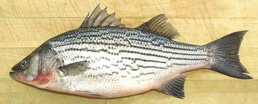

Striped Bass

[Striped Sea-bass, Morone saxatilis]
This sea bass is found mainly in river estuaries from the Gulf Coast of
the U.S. up the Western Atlantic coast into Canada and there are some
landlocked populations. It has been introduced to other countries and is
now farmed commercially. These fish can grow to 78 inches and 125 pounds
but the photo specimen was 15-1/2 inches and weighed 1-3/4 pounds, a
typical market size. This fish renews its population fairly quickly, is
not listed as threatened and is now being farmed.
More on Bass Family.
Striped Bass is an excellent eating fish, The flesh is light in color,
light in flavor without being bland, and tender, flaking apart easily into
large flakes. Well, actually it practically falls apart into large flakes
if wet cooked. The flesh is off white with a thin somewhat darker layer
just under the skin. It has a pleasant flavor by any means of cooking.
This fish can be filleted and pan fried, pan fried whole or pan
dressed, steamed, baked, grilled, or poached whole. When steamed with the
usual diagonal slashes through the skin, skin shrink opens the slashes some
but not so much as to be unattractive.
When frying skin-on, you definitely want at least a light powdering of
rice flour to prevent sticking to the pan and to keep the skin in place.
Once it's been heated the skin has almost no grip on the flesh and will
otherwise peel right off and make a mess.
Buying:
This fish is very common in Asian fish markets
here in Los Angeles. It is a premium fish often around 2010 US $3.69 /
pound. Though it is easy to confuse with the freshwater
White Bass, getting the wrong one isn't
a big problem as they are much alike.
Scales:
The scales on this fish are medium size and scrape
off quite easily with only moderate flying about.
Cleaning:
There are no particular problem with cleaning
this fish. The membranes behind the gills are quite strong so you may wish
to cut the gills out with kitchen shears.
Fillet:
This is an easy fish to fillet. Make cuts over
the tail and on the underside from tail to body cavity. At this point you
can pull out the anal fin if you wish. Cut from front to back down to the
backbone on both sides, then hop over the backbone at the tail and work
forward to the rib cage. Cut the ribs from the backbone with kitchen
shears and pull them from the fillet with long nose pliers - they pull
fairly easily taking little flesh. There are also some centerline pin
bones for about the first inch, which should be pulled out straight
forward.
Skin:
The skin has little shrink, but enough to slightly
curl a fillet in the frying pan. If you press the fillet back flat with
your turner the skin quickly looses its grip and the fillet will continue
to fry flat. It does not have a strong or unpleasant flavor, so can be
left on for most forms of cooking. Fillets can be skinned quite easily
with the long knife and cutting board
Method.
Yield:
A 1-3/4 pound fish yielded 14 ounces of fillet
skin-on (50%) and 12 ounces with the skin removed (43%).
Stock:
The head, bones and fins make a pleasant usable
fish stock with little oil, but do remove what oil there is using your
gravy separator before use. See our
Method.
sf_bassstz* 061010 - www.clovegarden.com
©Andrew Grygus - agryg@clovegarden.com - Photos
on this page not otherwise credited © cg1
- Linking to and non-commercial use of this page permitted